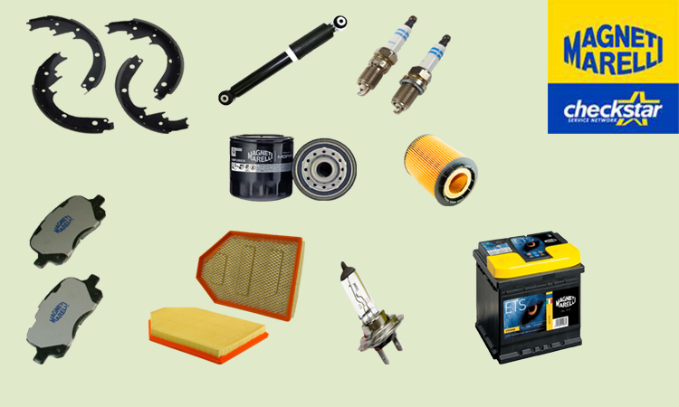

Magneti Mareilli je međunarodna grupa posvećena projektovanju i proizvodnji sistema visoke tehnologije i komponenti za automobilsku indrustriju. Osnovana je 1919. godine, sa kapitalom potpisana na dva jednaka dela između Fiat-a i kompanije Ercole Marelli. Sa 38.000 zaposlenih, 89 proizvodnih pogona, prisutni su u 19 zemalja i snabdevaju sve najvažnije proizvođače u Evropi, Severnoj i Južnoj Americi i Aziji. Cilj Magenti Marelli-ja je da bude na raspolaganju kupcima po pristupačnoj ceni, spajanjem visokog kvaliteta i visoke tehnologije.
Magneti Marelli je prvi stvorio ksenonsko svetlo 1991. godine, dajući novu dimenziju frontalnoj rasvetli. Od 2010. godine, postaje dobavljač Mercedes-Benz za sve LED farove sa prilagodljivom funkcijom za svetlo.
2010. godine Ministartsvo za kulturnu baštinu i aktivnost Italije nagrađuje Magneti Marelli sa "Deklaracija o istorijskom značaju".
